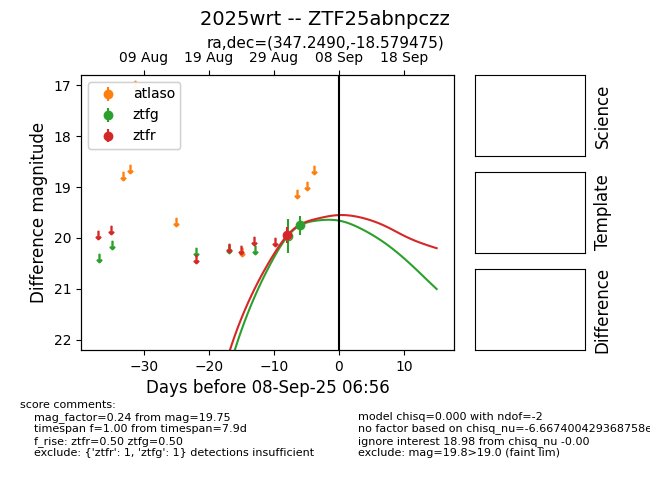

FINK: ZTF25abnpczz
Lasair: ZTF25abnpczz
ALeRCE: ZTF25abnpczz
TNS: 2025wrt
YSE: 2025wrt
ZTF25abnpczz (ztf,fink)
2025wrt (tns,yse)
equatorial (ra, dec) = (347.2490,-18.57948)
galactic (l, b) = (47.4615,-64.95948)

last atlaso=19.34, ztfg=19.73, ztfr=19.58
1 atlaso, 2 ztfg, 3 ztfr detections